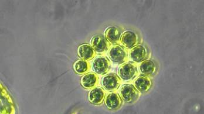
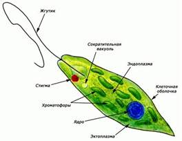
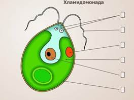

На предыдущем уроке мы разговаривали о корненожках, радиоляриях, солнечниках и споровиках. Сегодня мы завершаем тему «Простейшие». Предметом рассмотрения станут жгутиконосцы и инфузории.
Жгутиконосцы. Общая характеристика
Жгутиконо́сцы – очень крупная и разнородная группа простейших. Объединяет их лишь одна общая черта – наличие жгутиков. Жгутики используются для передвижения или для создания токов воды, приносящих пищу. Среди жгутиконосцев много как свободноживущих форм, так и симбионтов, среди них есть одноклеточные и колониальные формы. До выделения простейших в самостоятельное царство ботаники включали жгутиконосцев в состав царства Растения как «одноклеточные водоросли». Зоологи относили их к царству Животные, как класс в составе типа Простейшие. Ученые разделяли жгутиконосцев на растительных (автотрофных) и животных (гетеротрофных). Сейчас такое разделение используется лишь условно, для удобства. Известны не только одноклеточные жгутиконосцы, но и колониальные виды, состоящие из 8, 16, 32 и даже многих тыс. клеток (Рис. 1). Клетки колонии устроены сравнительно одинаково, каждая из них по своему строению напоминает одноклеточного жгутиконосца. Тип питания жгутиконосцев может быть различным. Растительные жгутиконосцы обычно могут фотосинтезировать и питаться, как растения, поскольку в их клетках имеются пластиды, содержащие необходимые пигменты, в частности хлорофилл. Они – автотрофные организмы. Другие жгутиконосцы не имеют пластид. Они питаются готовыми органическими веществами. Это – гетеротрофные организмы.

Рис. 1. Колониальный 16-ти клеточный жгутиконосец
Некоторые жгутиконосцы, например эвглена и хламидомонада, способны совмещать растительный и животный типы питания. Их называют миксотрофами, или миксотрофными организмами. Большинство «растительных» жгутиконосцев ведёт свободный образ жизни в водной среде. В качестве примеров мы рассмотрим эвглену зелёную и хламидомонаду.
Эвглена зелёная

Рис. 2. Эвглена зелёная (Источник)
Клетка эвглены зелёной веретеновидной формы, с двумя жгутиками, один из которых короткий и незаметный (Рис. 2). Она зелёного цвета с красным светочувствительным глазком у переднего конца. Размножается путем продольного деления клетки. Иногда эвглена, размножаясь в огромных количествах, вызывает «цветение» воды. Способна как к гетеротрофному, так и к автотрофному типу питания за счёт наличия хлоропластов. Фотосинтез происходит на свету. В темноте, вследствие его невозможности, эвглена зелёная питается гетеротрофно. Длительное пребывание в малоосвещённых местах приводит к «обесцвечиванию» эвглены. В таких случаях хлорофилл в хлоропластах разрушается. Однако при возвращении в освещённые места эвглена вновь начинает питаться автотрофно. Является миксотрофом.
Хламидомонада

Рис. 3. Хламидомонада (Источник)
Хламидомона́да передвигается при помощи вращения сразу двух длинных жгутиков (Рис. 3). Обычно каждая клетка содержит две вакуоли, один крупный хлоропласт и имеет красный глазок. Глазок реагирует на свет. Хламидомонада движется по направлению к свету – это называется положительным фототаксисом. Хлоропласт занимает большую часть клетки, в нём на свету откладывается крахмал. Питание как автотрофное, так и гетеротрофное – хламидомонада, как и эвглена, является миксотрофом. Размножается преимущественно вегетативно, однако имеется и половое размножение. «Животные» жгутиконосцы не имеют хлоропластов. Среди них есть как свободноживущие, так и паразитические формы. От воротничковых жгутиконосцев, свободноживущих фильтраторов, вероятно, произошли животные. Из паразитов мы рассмотрим трипаносом, лямблий и лейшманий.
Трипаносомы
Рис. 4. Трипаносомы в компании эритроцитов (Источник)
Трипаносомы (Рис. 4) паразитируют на различных хозяевах и вызывают многие заболевания, среди которых наиболее известна сонная болезнь. Природными носителями трипаносом являются млекопитающие, переносчиками – насекомые. Например, сонная болезнь переносится мухой цеце. После её укуса паразиты проникают в кровь и лимфу, затем – в центральную нервную систему жертвы. У больного проявляются приступы усталости, затем нарушается цикл сна и бодрствования, из-за чего болезнь и получила своё название.
Ля́мблии
Рис. 5. Лямблии (Источник)
Ля́мблии (Рис. 5) паразитируют в тонком кишечнике человека и многих других млекопитающих, а также птиц. Болезнь, вызываемая ими, носит название лямблиоз. Большие количества лямблий, которые покрывают обширные поверхности кишечной стенки, нарушают работу кишечника. Они также оказывают сильное токсическое воздействие на организм. Лямблии – анаэробы, они способны жить без кислорода. Размножаются путем продольного деления надвое. Во внешнюю среду с фекалиями хозяина попадают цисты, проникающие в организм новых хозяев с зараженной водой или пищей.
Лейшмании
Лейшмании - род паразитических простейших, вызывающих лейшманиозы, в том числе «восточную язву». Естественным резервуаром разных видов служат млекопитающие и ящерицы. Переносчиками являются москиты. Москиты заражаются лейшманиями, когда пьют кровь заражённого млекопитающего. Паразиты вместе с проглатываемой кровью проникают в пищеварительный канал москита, где размножаются и блокируют просвет канала. Когда москит кусает очередную жертву, он вынужден отрыгнуть паразитов в ранку. У человека лейшмании могут вызывать кожные язвы или поражения внутренних органов. Лейшманиозами больны около 12 миллионов человек в 88 странах, в основном тропических.
Инфузории. Общая характеристика
Рис. 6. Инфузории (Источник)
Инфузории – простейшие, клетки которых покрыты ресничками и имеют как минимум по 2 ядра (Рис. 6). Среди них есть свободноживущие, прикрепленные и паразитические формы. Живут в морях и пресных водоёмах, некоторые виды – в полостях между частичками почвы и во мхах. Многие инфузории – симбионты других животных. Форма тела инфузорий постоянна, она может быть различной у разных видов. Размер клетки – от 10 мкм до 4,5 мм. У большинства инфузорий имеются реснички, с их помощью они очень быстро передвигаются. Инфузории – это самые «быстрые» простейшие, при движении развивают скорость 0,4–2 мм/с. В то же время самые быстроплавающие жгутиконосцы могут развивать скорость лишь 0,2 мм/с. Характерно наличие экструсом – специальных телец, предназначенных для быстрого выбрасывания на поверхность клетки. Они могут использоваться для защиты от хищников. Хищные инфузории используют их для обездвиживания и «заякоривания» добычи. Свободноживущие инфузории питаются в основном бактериями, другими простейшими и даже мелкими животными. Паразитические – обитают в кишечнике животных, питаются содержимым кишечника, разрушают слизистую и могут вызывать серьезные заболевания. Инфузории-мутуалисты из кишечника жвачных могут «помогать» хозяевам переваривать целлюлозу.
Выделение у инфузорий происходит при помощи сократительных вакуолей и просто через поверхность клетки. Они выводят из клетки избыток воды и продукты обмена. В отличие от других простейших, инфузории обладают ядрами двух типов: маленькими микронуклеусами и большими макронуклеусами. Микронуклеус содержит полную наследственную информацию, это – «ядро для размножения». Макронуклеус содержит лишь копии активно используемых генов, он «ядро для жизни». Размножаются инфузории бесполым (поперечное деление надвое) и половым путями. Большинство инфузорий способно образовывать покоящиеся цисты в ответ на неблагоприятные условия, такие как недостаток пищи или высыхание. Всего известно более 7,5 тыс. видов инфузорий.
Инфузория туфелька
Рис. 7. Инфузория туфелька (Источник)
Инфузория туфелька (Рис. 7) получила своё название за постоянную форму тела, напоминающую подошву туфли. Встречается она в пресных водах. Её размеры – обычно около 0,2–0,3 мм. На поверхности клетки расположены реснички. Их от 10 до 15 тысяч. Скорость движения инфузории – около 2 мм/c. У туфельки 2 сократительные вакуоли: в передней и задней части клетки. Каждая состоит из резервуара и отходящих от него радиальных каналов, по которым из цитоплазмы поступает жидкость. Имеется два разных по строению и функциям ядра – микронуклеус и макронуклеус.
Значение простейших
Несмотря на малые размеры тела, простейшие имеют громадное значение в природе и в жизни человека. Автотрофные простейшие вырабатывают органические вещества и выделяют кислород. Здесь особенно велика роль простейших морского планктона. Многие простейшие являются незаменимым кормом для различных животных. Простейшие очищают водоёмы, поедая детрит и бактерий. Большое количество простейших является паразитами и вызывает различные заболевания. Не меньше среди них и мутуалистов, иногда совершенно необходимых для выживания других организмов. Скелеты и раковинки погибших простейших могут формировать многометровые отложения на дне морей. Именно из таких отложений получились мел и некоторые известняки. Почти все основные группы свободнодвижущихся простейших представлены в почвенной фауне. Их численность в 1 г почвы может быть от 150 тыс. до 1 млн, т. е. на 1 га придется 150–1000 кг простейших, а на окультуренных почвах даже до 8,5 т на 1 га.
Список литературы
1. Акимушкин И. И. Мир животных. Беспозвоночные. Ископаемые животные. – М.: «Мысль», 1992
2. Жизнь Животных. Т. 1. / Под ред. Полянского Ю. И. – М.: «Просвещение», 1987
3. Латюшин В. В., Шапкин В. А. Биология. Животные. 7 класс. – М.: Дрофа, 2011
4. Н. И. Сонин, В. Б. Захаров. Биология. Многообразие живых организмов. Животные. 8 класс. – М.: Дрофа, 2009
Дополнительные рекомендованные ссылки на ресурсы сети Интернет
1. Академик (Источник).
2. Академик (Источник).
3. Академик (Источник).
4. Академик (Источник).
5. Академик (Источник).
Смотрите английскую Википедию, изучайте зоологию и английский язык одновременно!
6. Англ. Википедия (Источник).
7. Англ. Википедия (Источник).
8. Англ. Википедия (Источник).
Домашнее задание
Каково соотношение простейших с тремя царствами могоклеточных эукариот? Каких жгутиконосцев вы знаете?
Многие жгутиконосцы покрыты жгутиками и внешне напоминают инфузорий. Какие способы отличать их друг от друга вы бы предложили?
Как вы считаете, какова важнейшая роль простейших в природе?
{kind=link}
{kind=link}
{kind=link}
{kind=link}
{kind=link}
{kind=link}